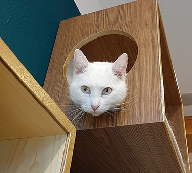
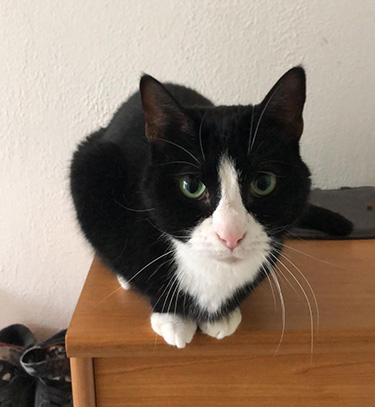

Don't shop, adopt!
Oké, het belangrijkste! Kies voor het adopteren van een kat in plaats van het kopen van een (ras)kat. Door adoptie zorg je ervoor dat je een kattenleven redt. Daarnaast zijn asielkatten vaker ook gezonder omdat ze niet overgefokt zijn. Ze hebben ook unieke soms gekke persoonlijkheden zijn goedkoper en jij draagt bij om zo de zwerfkatten te verminderen. Je helpt een kat door ze een warm huisje aan te bieden, plus een harig vriendje erbij is altijd leuk!

- 
- 